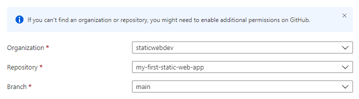
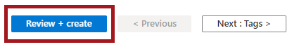
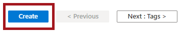
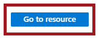
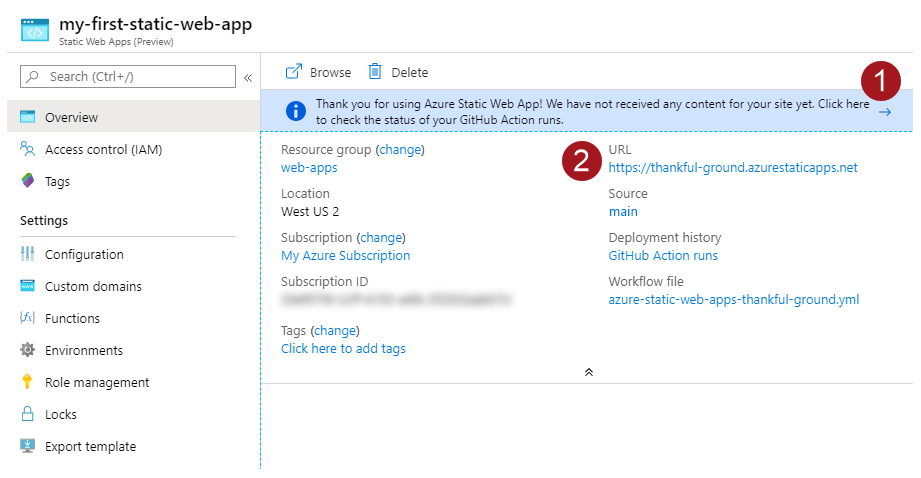

Azure Static Web Apps publishes a website to a production environment by building apps from an Azure DevOps or GitHub repository. In this quickstart, you deploy a web application to Azure Static Web apps using the Azure portal.
This article uses a GitHub template repository to make it easy for you to get started. The template features a starter app to deploy to Azure Static Web Apps.
This article uses an Azure DevOps repository to make it easy for you to get started. The repository features a starter app used to deploy using Azure Static Web Apps.
Sign in to Azure DevOps.
Select New repository.
In the Create new project window, expand Advanced menu and make the following selections:
Setting
Value
Project
Enter my-first-web-static-app.
Visibility
Select Private.
Version control
Select Git.
Work item process
Select the option that best suits your development methods.
Select Create.
Select the Repos menu item.
Select the Files menu item.
Under the Import repository card, select Import.
Copy a repository URL for the framework of your choice, and paste it into the Clone URL box.
In the Basics section, begin by configuring your new app and linking it to a GitHub repository.
Setting
Value
Subscription
Select your Azure subscription.
Resource Group
Select the Create new link, and enter static-web-apps-test in the textbox.
Name
Enter my-first-static-web-app in the textbox.
Plan type
Select Free.
Azure Functions and staging details
Select a region closest to you.
Source
Select GitHub.
Select Sign-in with GitHub and authenticate with GitHub.
After you sign in with GitHub, enter the repository information.
Setting
Value
Organization
Select your organization.
Repository
Select my-first-web-static-app.
Branch
Select <branch_name>.

Lưu ý
If you don't see any repositories:
You may need to authorize Azure Static Web Apps in GitHub. Browse to your GitHub repository and go to Settings > Applications > Authorized OAuth Apps, select Azure Static Web Apps, and then select Grant.
You may need to authorize Azure Static Web Apps in your Azure DevOps organization. You must be an owner of the organization to grant the permissions. Request third-party application access via OAuth. For more information, see Authorize access to REST APIs with OAuth 2.0.
In the Basics section, begin by configuring your new app and linking it to an Azure DevOps repository.
Setting
Value
Subscription
Select your Azure subscription.
Resource Group
Select the Create new link, and enter static-web-apps-test in the textbox.
Name
Enter my-first-static-web-app in the textbox.
Plan type
Select Free.
Azure Functions and staging details
Select a region closest to you.
Source
Select DevOps.
Organization
Select your organization.
Project
Select your project.
Repository
Select my-first-web-static-app.
Branch
Select <branch_name>.
Lưu ý
Make sure the branch you are using is not protected, and that you have sufficient permissions to issue a push command. To verify, browse to your DevOps repository and go to Repos -> Branches and select More options. Next, select your branch, and then Branch policies to ensure required policies aren't enabled.
In the Build Details section, add configuration details specific to your preferred front-end framework.
Type dist/angular-basic in the App artifact location box.
Select Blazor from the Build Presets dropdown.
Keep the default value of Client in the App location box.
Leave the Api location box empty.
Keep the default value of wwwroot in the App artifact location box.
Select React from the Build Presets dropdown.
Keep the default value in the App location box.
Leave the Api location box empty.
Type build in the App artifact location box.
Select Vue.js from the Build Presets dropdown.
Keep the default value in the App location box.
Leave the Api location box empty.
Keep the default value in the App artifact location box.
Select Review + create.

Lưu ý
You can edit the workflow file to change these values after you create the app.
Select Create.

Select Go to resource.

View the website
There are two aspects to deploying a static app. The first creates the underlying Azure resources that make up your app. The second is a workflow that builds and publishes your application.
Before you can go to your new static site, the deployment build must first finish running.
The Static Web Apps Overview window displays a series of links that help you interact with your web app.

Selecting on the banner that says, Select here to check the status of your GitHub Actions runs takes you to the GitHub Actions running against your repository. Once you verify the deployment job is complete, then you can go to your website via the generated URL.
Once GitHub Actions workflow is complete, you can select the URL link to open the website in new tab.
Once the workflow is complete, you can select the URL link to open the website in new tab.
Clean up resources
If you're not going to continue to use this application, you can delete the Azure Static Web Apps instance through the following steps: